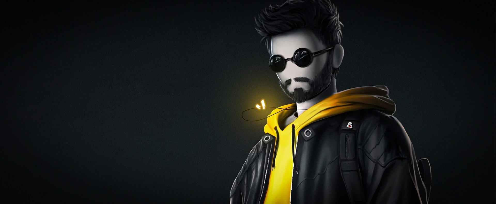
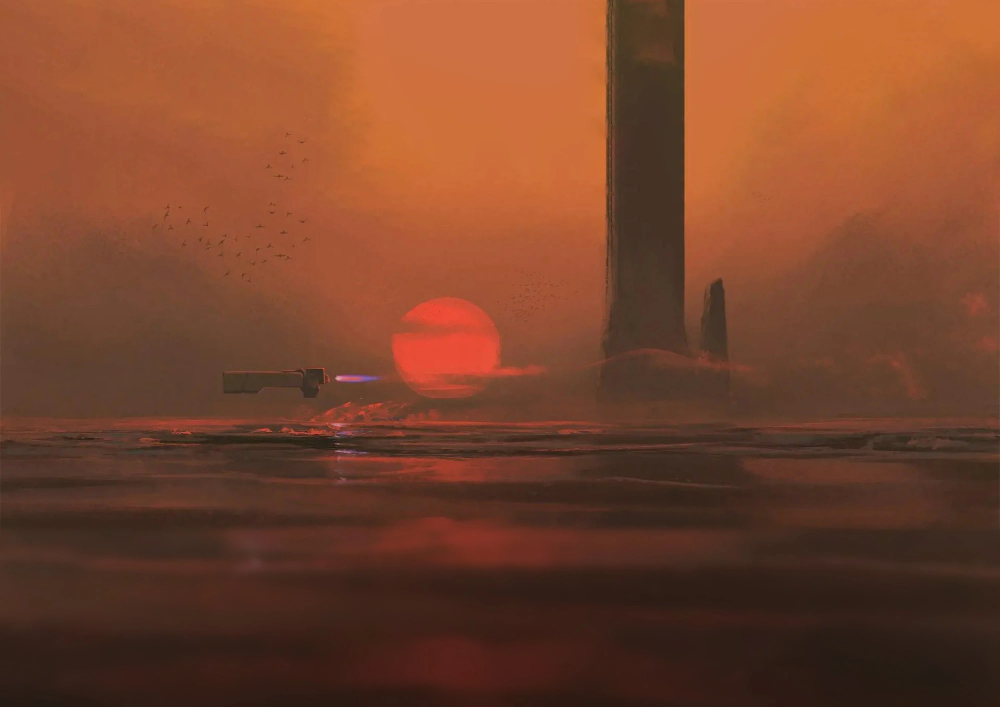
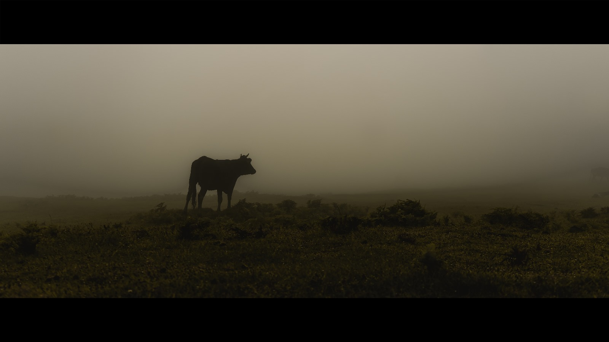
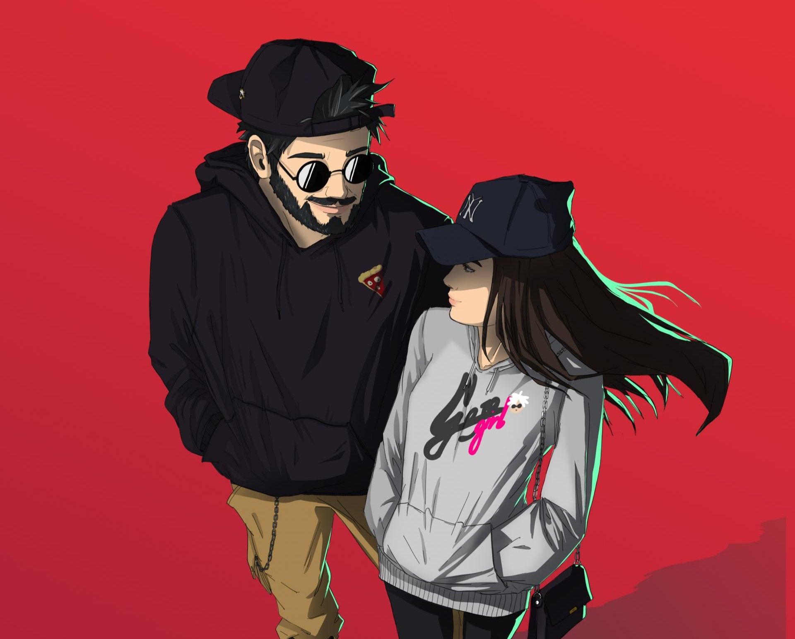

"Kreativität bedeutet nur, Dinge zu verbinden"
Eine kurze Einführung darüber, wer ich bin und was ich als Entwickler und Künstler schaffe
Ich bin Joline, ein Entwickler, der es liebt, digitale Lösungen zu schaffen. Mein charakteristisches Merkmal ist es, die Robustheit des Codes mit der Eleganz des Designs, der Wirkung der Grafik und der akribischen Aufmerksamkeit für die Benutzererfahrung (UX) zu verbinden. Das Ziel ist es daher, Produkte zu schaffen, die nicht nur effizient, sondern auch angenehm zu verwenden und zu betrachten sind.
Entdecke meine Design-Ecke: von Zeichnungen bis zu Logos, erfahre, wie ein künstlerisches Projekt in der digitalen Welt entsteht

Das Herzstück meiner Arbeit ist die Programmierung, erfahre mehr darüber
Ein kleiner Raum, der meiner Leidenschaft für die Fotografie gewidmet ist

Una galleria con una selezione dei miei lavori, divisi per categoria

@ JOLINE 2025
Powered by docker